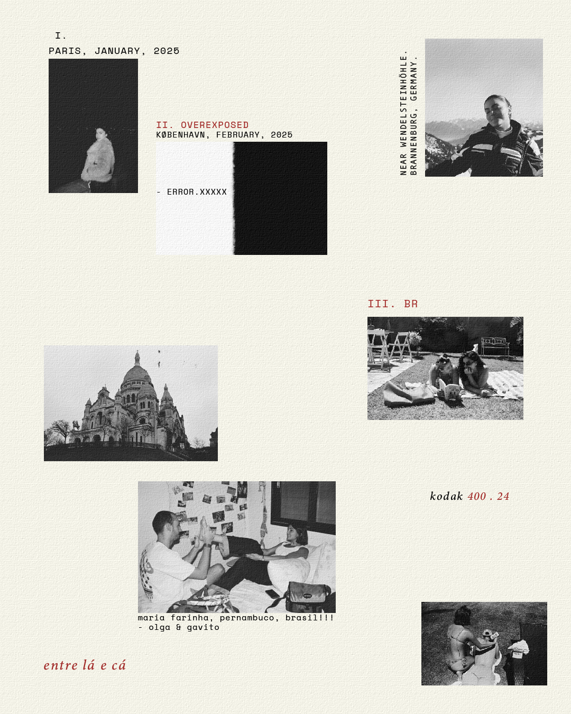
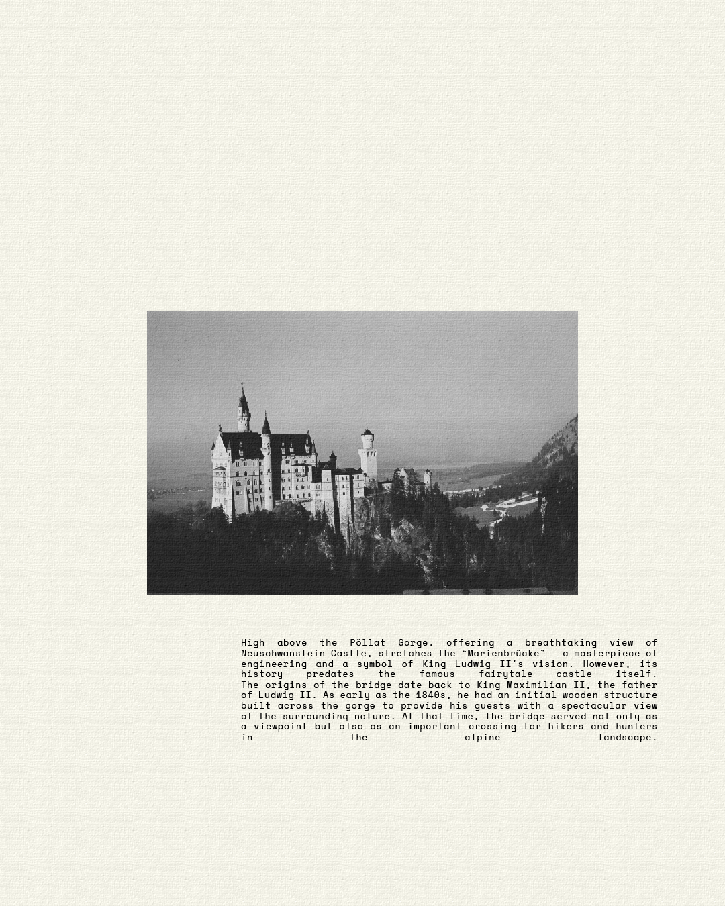
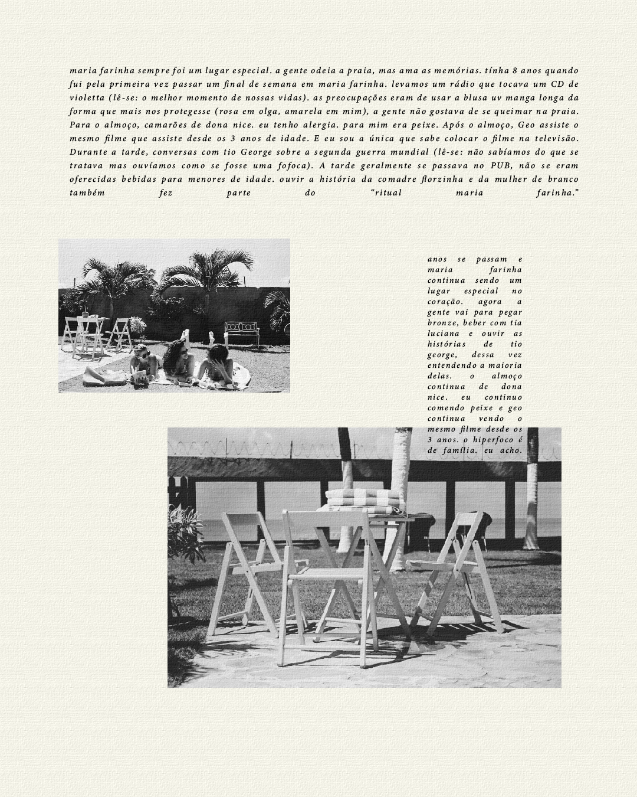
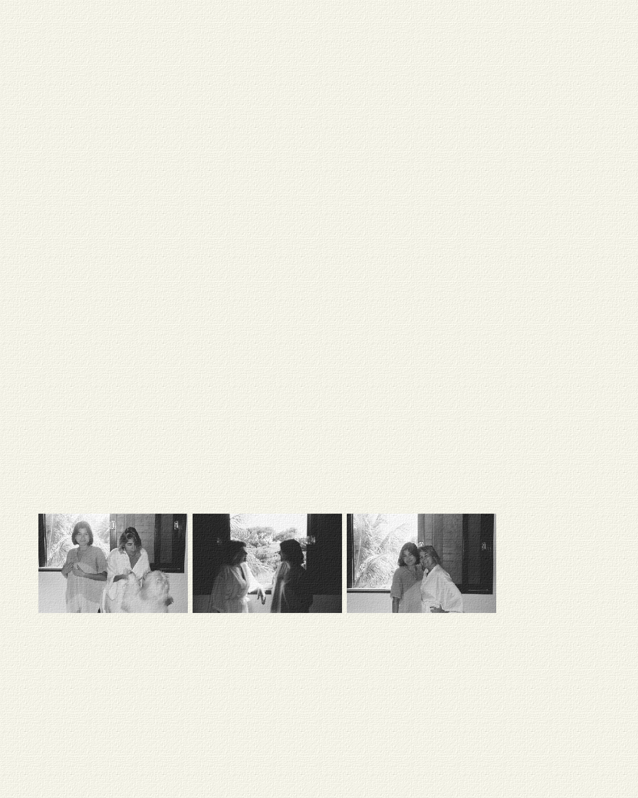
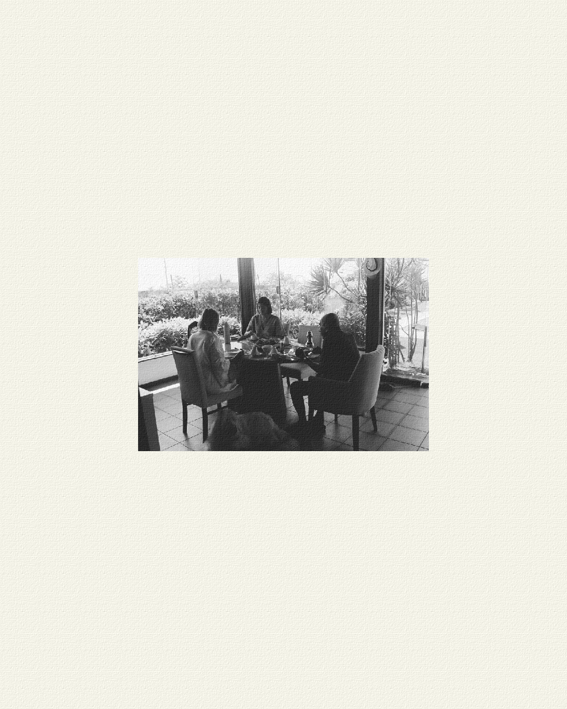
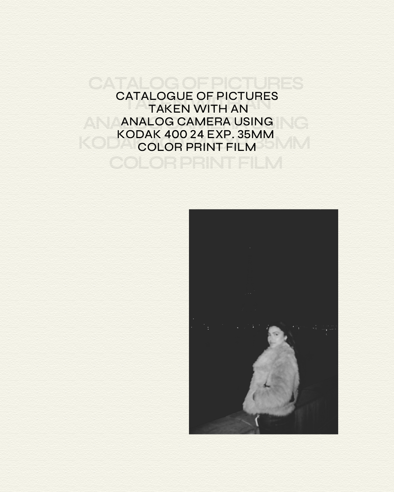

Desenvolvimento de um álbum visual autoral a partir de fotografias analógicas capturadas durante viagens por diferentes lugares do mundo. O projeto reúne a edição das fotografias e a criação de um design editorial com textos e diagramações experimentais, explorando a estética de um álbum de memórias e transformando os registros da viagem em uma narrativa visual.